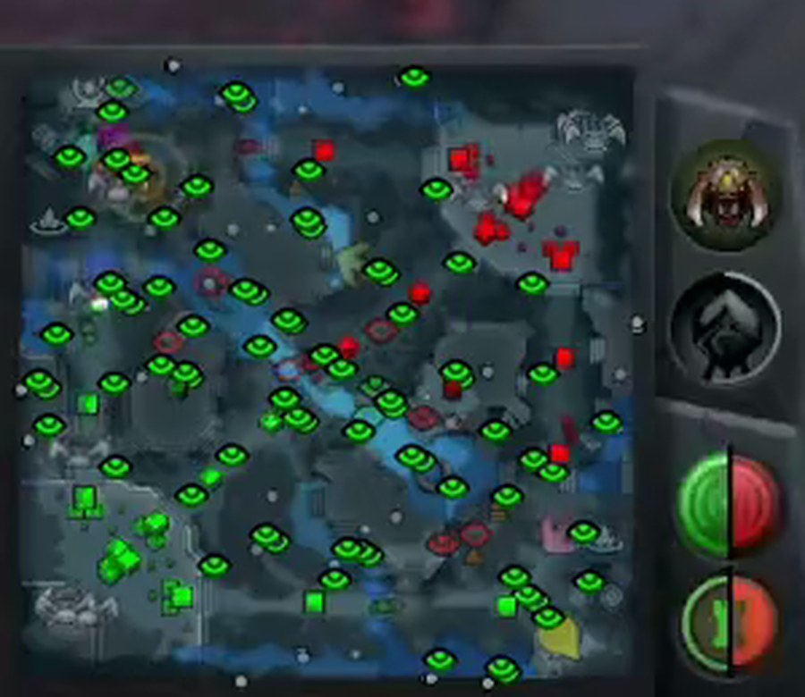
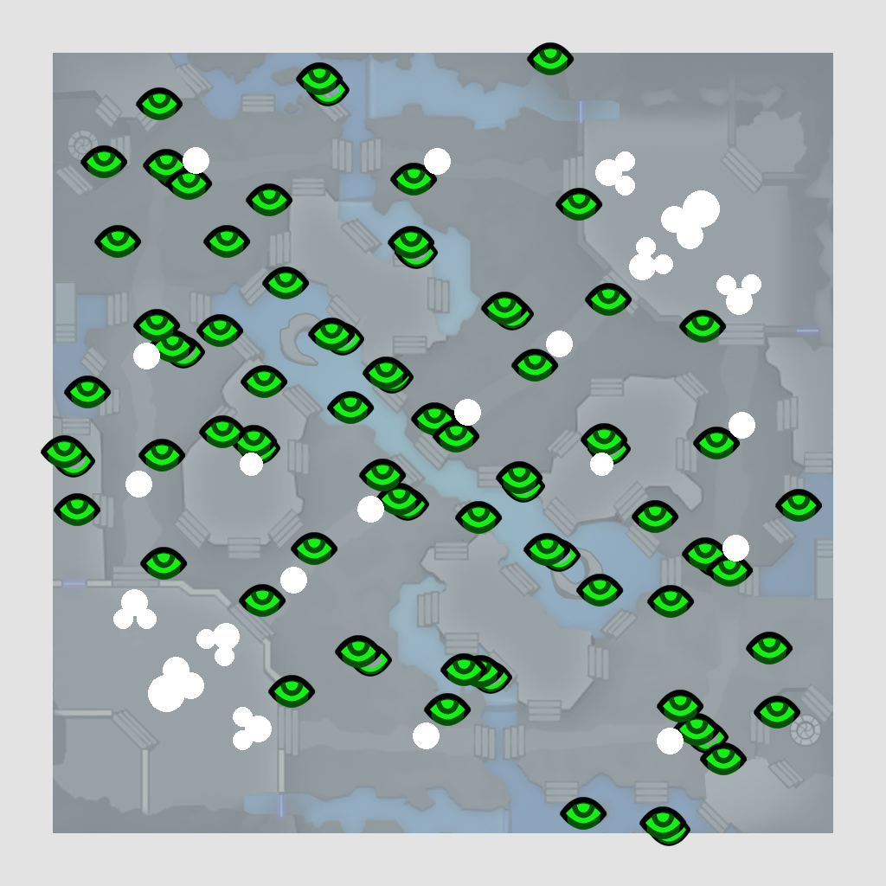

Anti-Snipe Minimap Overlay
For Dota 2 streamers on the current map (7.4x). Put it over your minimap in OBS: snipers see a map full of wards, you still see towers, heroes and creeps.

On stream: map covered at 50%, real buildings visible through the holes, fake wards everywhere.

antisnipe_simple_50.png (recommended)
Download 50%
60%
75%
wards only
{kind=link}
{kind=link}
{kind=link}
{kind=link}
What it is
- A 1024x1024 PNG of the Simple Minimap terrain at 50% opacity (60% / 75% variants too), covered with fake observer and sentry wards at real ward spots: runes, Roshan pits, Tormentors, outposts, lotus pools, twin gates, shops, lane towers, jungle camps.
- Transparent holes at every tower, barracks, ancient and outpost, so the real building state stays readable for you and your viewers.
- Hero, creep and courier icons are drawn by the game on top of the map texture, so they stay visible through the 50% cover. The real wards drown in the fake ones.
- Map geometry, icon sprites and building positions come straight from the game files, so everything lines up with the real minimap.
How to use (OBS / Streamlabs)
- Add an Image source with the PNG, above your game capture.
- Scale it to the size of your minimap square. The PNG covers the whole minimap square, including the few pixels that sit under the HUD frame, so make it slightly larger than the visible map. Example for 2560x1440 with the default minimap: 340x340 px at x=-6, y=1110. For 1920x1080: 255x255 px at x=-4, y=833.
- Check that the tower holes sit exactly on your tower icons. If not, nudge position/scale. Done.
- Optional: if you use the default (colourful) minimap instead of the Simple Minimap, take
antisnipe_iconsonly.pngand set the Image source opacity to taste, or ask for a default-map version.
Note: the overlay is static, it does not react to the game. If Valve moves towers again, the holes move with the next version.
Made by BloppBOT for the Ability Draft community. Free to use and share. Questions: the AD Discord.